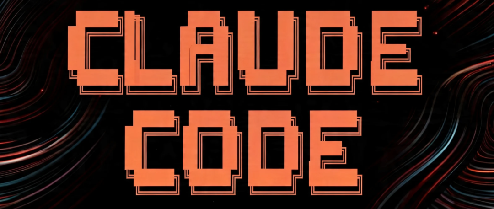

很多开发者在使用 Claude Code 时，最初的反应往往是不适应。习惯了网页版（GUI）那种精美的对话框和即时反馈，突然面对一个黑糊糊的终端（CLI）界面，会有一种手脚施展不开的感觉。
但如果你真的想在生产环境里把 AI 变成生产力工具，就必须跨过这道门槛。终端操作不只是为了显得极客，它背后是一套关于交互效率、上下文管理和模型经济学的深度逻辑。在高手手中，终端是思维的延伸；而在新手眼里，它只是一个难用的输入框。
要实现从笨拙操作到无缝接轨的跨越，本质上是需要掌握一套关于 Claude Code 的操作操作系统。
效率的底层逻辑：为什么要放弃鼠标？
在 GUI 界面中，鼠标的每一次点击、每一个窗口的切换，实际上都在打断你的心流。对于需要深度思考的工程任务来说，这种微小的延迟累积起来就是巨大的认知损耗。
终端的核心优势在于盲操。当你能熟练使用 Ctrl + U 清除光标前整行、或者用双击 Esc 瞬间拦截模型的错误输出时，你的操作速度才真正能跟上你的思维速度。
这种速度不只是快了三五秒，它改变了你与 AI 协作的心理模型。在网页端，你更像是在给一个远程外包发邮件，然后等待回复；而在终端，通过快捷键和指令的配合，你是在操作一台拥有智能的超级计算机。
上下文管理：不仅是额度，更是思维的边界
在 Claude Code 的指令集里，最重要的两个指令不是如何提问，而是如何管理记忆：/compact（压缩）和 /clear（清空）。
新手最常犯的错误是让对话无限延伸。在模型的世界里，上下文并非无穷无尽的免费资源，而是一种极易被污染的稀缺资产。 随着对话长度增加，模型会出现显著的注意力稀释现象。它会忘记你最初设定的约束条件，甚至在冗长的历史代码中迷失方向。
/compact 指令的核心价值在于去粗取精。它会促使模型总结当前任务的进度，舍弃掉那些中间调试的废话，只保留核心的逻辑和结论。这不仅是为了节省你那每五小时刷新一次的 Token 额度，更是为了确保模型在后续任务中保持最高的智力浓度。
而当一个阶段性的任务（如修复一个特定 Bug）完成后，最专业的做法是果断执行 /clear。不要留恋之前的对话，清空上下文，给下一个任务留出最大的推理空间。这种随手清空的工程习惯，直接决定了模型回复的精准度。
模型经济学：思考预算的精细化配置
通过 /model 指令，我们可以窥见 AI 工程化的另一个维度：思考预算（Thinking Budget）的配置。
在实际生产中，并不是所有任务都需要最高强度的推理。如果我们把 Claude 3.5 Sonnet 比作一个高效的干事，那么开启了高思考预算的 Opus 或增强版模型就像是一个资深的架构师。
• 对于简单的文件索引、代码格式化、或者是查询项目结构，使用低预算、快速响应的模式（如 Haiku 或低预算 Sonnet）是最具 ROI（投资回报率）的选择。 • 只有在遇到逻辑极其复杂的逻辑漏洞（Logical Bug）或者需要进行大规模架构重构时，才有必要切换到高思考预算。
这种看菜下饭的能力，是高级工程师必备的素养。在终端里，通过指令快速切换模型和思考深度，本质上是在动态调整你的算力成本与产出比。
实战中的容错与干预
在终端操作中，最容易被忽视的快捷键是双击 Esc 和双击 Ctrl + C。
很多开发者在看到模型输出跑偏时，习惯性地等它说完，然后再去纠正。但在生产环境，这既浪费时间也浪费额度。双击 Esc 是紧急制动，它能在模型开始产生幻觉的瞬间将其切断。
更进阶的操作是利用介入式补发。当模型在执行任务时，只要你发现它的方向偏了，不需要等待它彻底停下。在光标移回最左侧之前，你可以随时输入新的补充指令并回车。Claude Code 的 Harness 架构能够捕捉这些中间干预，并在当前动作告一段落后立即调整方向。这种实时修正的能力，是网页端无法企及的。
权限与风险：危险的绕过模式
Claude Code 提供了一个名为 --dangerously-skip-permissions 的启动参数。从名字就能看出来，这并非为初学者设计。
开启这个模式意味着你赋予了 AI 不问即执行的权力。在处理上百个文件的批量重构时，这确实能极大提升流畅度，但也意味着如果模型产生幻觉，它可能会瞬间改乱你的整个本地库。
实战派的建议是：在小型、可控、且有 Git 版本管理（Checkpoint）的实验性分支上，可以开启此模式来榨取最大效率；但在涉及核心逻辑或生产环境配置时，必须回归到逐项确认的模式。速度固然重要，但确定性才是工程的基石。
结语：从指令到习惯的内化
掌握这几个指令和快捷键只是开始：
• /resume与/rewind：赋予了你在不同任务路径上回溯和平行切换的能力。• Ctrl + K/U与Tab：是实现心手合一的基础动作。• /config：是调教你的智能助手个性化风格的控制台。
当你不再需要查阅手册就能随手完成上下文压缩、模型切换和动作拦截时，你会发现 Claude Code 不再是一个外部的聊天窗口，而成了你IDE中一个不可或缺的智能内核。
AI 时代的竞争，正在从谁能写出更好的代码转向谁能更高效地编排 AI 来生成代码。而终端里的这几个字符，正是开启这场效率竞赛的钥匙。